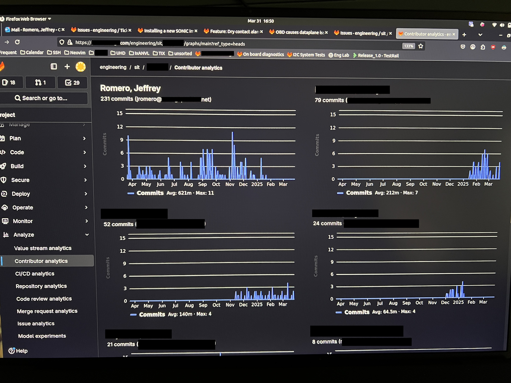

Systems Integration Test Engineer
Company: Canoga Perkins
March 4, 2024 - May 31, 2025
Location: Chatsworth, CA, 91311
- Automated traffic generators, as well as SSH and Telnet connectivity tests for 5G network switches with Bash and Python scripts, increasing test efficiency and supporting faster issue identification during validation.
- Integrated the automation into the GitLab CI/CD pipeline to validate new software version releases, significantly reducing cross-team triage time by automating emails containing detailed test reports.
- Refined the results of over 120 test cases from below 20% passing to over 90% by discovering, documenting, and debugging issues where untagged, VLAN, Q-in-Q, undersized, and oversized ethernet frames could not be detected by the FPGA.
- Sustained Playwright and Robot Framework automation for legacy network switch configurations, helping preserve test coverage and support more reliable regression validation.
- Retrofit the engineering sub-network by replacing many unmanaged switches with three new managed switches, effectively accelerating the detection of network issues by DevOps/IT, and preventing long periods of downtime.
- Reduced the training period of new hires by meticulously documenting different procedures such as installing and configuring secure boot on the BIOS, installing new software and firmware versions, and recovering a network switch to an operational state after a kernel panic.
Commit Showcase (Horizontally-scrollable gallery)

